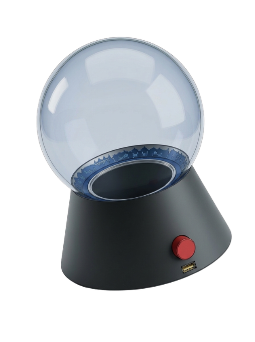

I’m Esther (she/her), a Biomedical Engineering senior at Olin College (’27) who builds at the fault line where clinical systems fail the people they’re meant to serve. Whether co-designing a wearable AI assistant with Boston older adults who dread patient portals or modeling breast cancer density across radiomics and spatial transcriptomics at Karolinska Institutet, I pair hard engineering with lived human evidence.
I serve as a Project Manager at Olin’s Human-Centered Computing Lab, and previously investigated clinical trial distrust in Olin’s Health Equity & Access Lab and reproductive health access as an Activist Academy Fellow at Fenway Health.
Featured Projects


Human-Computer Interaction
“Should I Use This or My Mind?”
Synthesizing participatory design findings into a wearable multimodal interface for patient portal navigation.
Olin HCC Lab · ACM ASSETS ’26


Augmented Reality & HCI
Holo-Kitchen
Mixed-reality culinary interface anchoring hands-free spatial cues, timers, and step-by-step guidance in the kitchen.
AR & Multimodal Interaction


Geospatial Health Equity
Geospatial Redlining
Spatial analysis overlaying 1930s HOLC redlining polygons with present-day environmental burdens and clinical access.
Spatial Data & Health Equity


Design & Creative Venture
E&M Creations
Co-founded creative design and custom fabrication venture blending tactile craft, branding, and rapid prototyping.
Co-Founder · Product & Brand Design


Computational Oncology
Radiomics & Spatial Transcriptomics in Breast Cancer
Machine learning integration of mammographic density patterns across ER+ and triple-negative breast cancer.
Karolinska Institutet · BMES ’26
Other Projects

Health Equity Informatics
Social Determinants of Health Location Recommender
Weighted KD-tree ranking algorithm analyzing county-level SDOH metrics across 900+ counties in Kotlin.
Data Analysis · Dec 2025


Health Equity & Policy
Clinical Trial Methodologies & Participant Distrust
Evaluating clinical study protocols and designing targeted interventions for equitable trial participation.
Health Equity & Access Lab · Fenway Health
Clinical Informatics
Patient Symptom Mapping & Decision Support Tool
Bipartite graph model in Kotlin connecting structured symptom and disease ontologies.
Informatics Developer · Oct 2025

Public Health Data
Nutritional Trends Longitudinal Data Pipeline
Python pipeline processing 143,000+ longitudinal USDA records across JSON and CSV formats.
Python · Apr 2025
Assistive Hardware
EMG-Controlled Prosthetic Arm Prototype
Real-time EMG signal acquisition and actuation control for an assistive prosthetic prototype.
Biomedical Engineering
Environmental Health
Microbial Degradation of Methylparaben in Black Hair Care
Evaluating microbial methods to degrade endocrine-disrupting parabens in personal care products.
Wet-Lab Study
Systems & Epidemiology
Justice Chamber & Mask Effectiveness Modeling
Statistical modeling of mask compliance paired with human-centered public health design.
Human-Centered Design
Robotics & Controls
PID Line-Following Autonomous Robot
Closed-loop PID control architecture and IR sensor calibration on Arduino hardware.
Embedded Systems